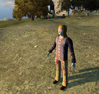

Paradise Glossed
 Paradise Glossed started as a university project being created and developed by 5 students - all programmers. For some of us, especially me and my fellow student Rainer, it soon emerged into a more personal project, for which we did a lot in our leisure time.
The university project itself was titled “Real-time-strategy game”. Our task was to develop a concept of a strategy game and a small prototype (proof-of-concept) using an existing SDK. Therefore we had to create a Game-Design-Document, a High-Level-Concept-Brochure for showing fictive publishers and even a board-game as a kind of paper-mockup. The concept is quite special, as it is a peaceful RTS.
For the prototype we have chosen to use the Cold-War-RTS World in Conflict by the Swedish developer Massive as it had the best SDK to create a modification. The programming-language was Python.
Luckily for us, Massive, Intel and GameStar, one of the biggest German gaming-magazines, announced a World in Conflict Mod Contest in which we participated and actually our concept was one of the three finals. You can read more about the mod competition in the Press section. There you can also get some information about our work in the World in Conflict community.
Story and Gameplay
“Paradise Glossed” is a real time strategy game and chooses as a central theme - in a satirical manner - the conflict between two ideologies.
On the one side there are the “Keepers of the Earth”, uncompromisingly liberal, green, continuously disappointed by humanity and the core of the dismal society.
On the other side there is the “Global Conglomerate”, uncompromisingly conservative, calculating, continuously looking for profits and the seducer of the masses.
Of course we are dealing with exaggerated stereotypes, but the inclined player will not find it hard to recognize the parallels to reality. There should be neither the image of a “good” and an “evil” side, and we do not have the intention of polarizing people or even insulting them.
It is and remains satire.
In a round of the game, the fractions fight for the ideological dominance in a piece of land which is not further defined. One player will become the coordinator of one of the two fractions for the duration of the round and determines how his followers should act: either attempt or convince the undecided population, prefer to convert the followers of the opponent fraction or counteract the continuously disappearing conviction on their own rows. As a further strategic component, the player must also decide how the natural resources in the conquered regions should be used - the “Keepers of the Earth” use wind energy facilities, whereas the “Global Conglomerate” of course use atomic energy.
The game is free from violence towards life forms, which however does not mean that the conflicts work completely without the demonstration of aggression. That the followers of the two fractions can’t stand each other is the core of the action and naturally also decisive for the fun of the game.
* English translation by Massive
Press
World in Conflict Mod Contest
Having created a creative concept for Paradise Glossed and using the SDK of the cold-war RTS “World in Conflict” we participated in the official World in Conflict Mod Contest that was started by Massive, Intel and GameStar - one of the biggest German gaming-magazines.
Fortunately our concept was chosen to be among the three finals. Here is the official press-statement by Massive:
In December 2007 Massive, GameStar, Intel and the Electronic E-Sports League called for the World in Conflict mod contest - a big contest for all WiC modification creators. In this competition every hobby-developer got the chance to create a top-modification along with Massive Entertainment. The jury consists of Nicklas Öberg (Massive), Fabian Siegismund(GameStar), Holger Kreie (Intel) and Alexander Albrecht (ESL). They have now selected three teams whose designs are looking the most promising.
David Lüscher, Frank Liepert and Tom Babilon presented Code Ares, which is about World War II in Europe and Africa. You will experience battles in the desert of Sahara, just as fights in the mountains of Monte Cassino. According to the era, Code Ares deals without any air units, but instead of them you are able to use new designed infantry, armour and support units.
The Throwface Mod Team from Mediadesign Academy for Design and Computer Science baptized its mod Skulls of Treasure Island. In this Mod players will fight each other, commanding either pirates or marines of the of the Caribbean islands of the 16th century. Like in the popular Warcraft 3 mod Defense of the Ancients, you can choose between being a pirate or a marine. Each one got special skills. Supported by KI-controlled units, the pirate’s target is to get into the enemy lair and destroy it.
As opposite to the two mods presented above, our next mod is non-violent. Paradise Glossed, created by Insane Buzzstards, demonstrates the conflict between two ideologies; capitalism and the protection of the environment. The two ideologies are represented by the “Global Conglomerate” and the “Keepers of Earth”. Both are trying to get the once neutral people on their side, for example with patriotic parades or rock concerts.
In issue 05/2008 of the GameStar Magazine, we’ll present to you each of these three mod-teams and their projects in more detail. In the next two months, each team will try to implement their designs as impressively as possible. The jury will then decide which one of the three mods has the greatest potential. Afterwards, the winner will create the first playable Beta in co-operation with Massive Entertainment, which you will find on one of our GameStar-DVDs at the end of this year.
Unfortunately our team split up and we did not develop Paradise Glossed any further. As far as I know the Throwface team has won the contest with their mod Skulls of Treasure Island.
You can read more about the contest at the GameStar website.
Community work
Shortly after we started working on the concept of Paradise Glossed, Massive published the SDK for World in Conflict and it was soon quite clear to us that we will develop the prototype using the WiC-SDK.
Considering the SDK being quite new, we were one of the first teams who started creating mods for the game and gaining knowledge of the SDK.
Of course we did not want to keep this knowledge, so we were very active in the official World in Conflict forums at Massgate and posted several advanced tutorials in the Massgate wiki, known as Insane Buzzstards Tutorials. We also developed several tools like the Custom-Viewer to make the development-process more efficient.